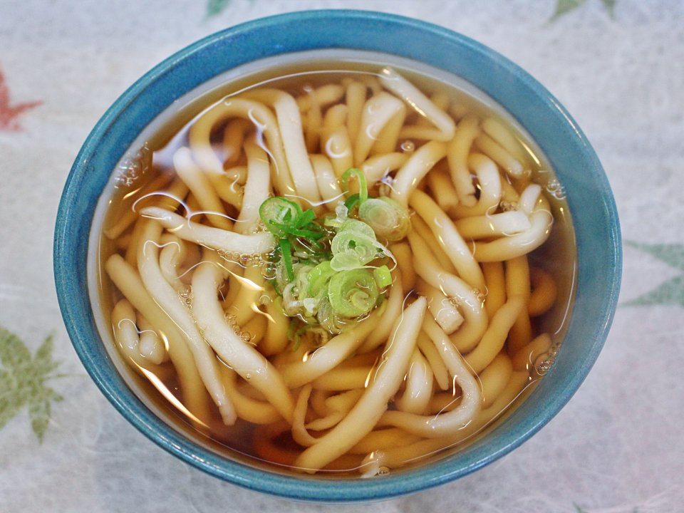

Udon

Description
Create a delicious bowl of kake udon by first preparing the udon broth.
After the udon broth is complete, cook the udon noodles. Then put the
noodles and broth into a bowl and serve it with your favourite toppings.
Ingredients
- 2 servings udon noodles
- 1/3 cup mentsuyu/tsuyu (Kikkoman mentsuyu)
- 2 1/3 cup water
- 1 tbsp mirin
- 1 green onion
- shichimi togarashi (optional)
Steps
-
For the broth, combine water, mentsuyu, and mirin into a saucepan and
simmer it over medium heat.
-
Once simmering, remove the pot from the heat and set it aside after
covering the lid.
- Boil a large pot of water.
-
Add the udon noodles and cook according to the package instructions.
(Stir the noodles occasionally so they don't stick to the bottom of the
pot)
- Drain the noodles using a colander and run it under cold water.
-
Rinse the starch off after the noodles are cooled, and then run it under
hot water to warm it back up.
- Put the hot udon noodles into a bowl.
- Pour the hot broth over the noodles.
- Top with green onions and optional shichimi togarashi.